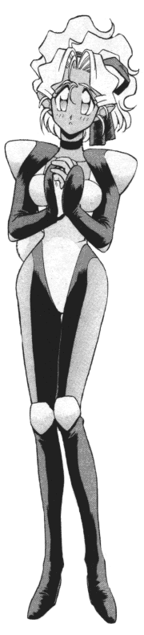

Regular FanFics: R-S |
This is the regular Tenchi fan fiction section. (No X-overs, Lemons, or tangental work) All stories are sorted by either the author's last name or their pen name. If you would like your stories published in this archive, please go here to add you works. |
R
Jim Rabaca (appocolypse13@yahoo.com)
Daniel "DAN_THE_MAN" Ramirez (dan__2003_98@yahoo.com)
Raven Makibi (ravenmakibi@aol.com)
No Need for Japan
A what if story. (Multipart) -8/17/1999
Old Foe, New Foe
A continuation for "No Need for Japan." (Multipart) -8/17/1999
To Whom My Loyalty Lies
Kiyone gets put on the case of her life. 8KB 10/23/2000
Rayani Kitsumuri (pikazitu@anime-genesis.com)
Rayani Kitsumuri (pikazitu@anime-genesis.com) and Magaru Sakari (meilinrae13@yahoo.com)
Rebel Princess (ice_princess1985@fromheaven.com)
Rebec1029 (Rebec1029@aol.com)
Becky "Washu" Reck (beckyr@ais.net)
Kaleb "The Red Writer" Redrum (TheRedWriter@cs.com)
Emma Reid (PPGPrincess5@aol.com)
Law Rence (rct@usa.com)
R. G. (R_G_11281@yahoo.com)
Gabe Ricard (Darksideblues@masakishrine.com)
Jameson "Raff" Rice (rice@lanset.com)
Richard "Jallenulian" Richardson (psybeam@juno.com)
Ring Princess (ringprincess@juno.com)
Rini (rinimoon@comcast.net)
Rion (Rion4ever@aol.com)
April "Seabiscuit" Roate (roatea@hotmail.com)
Dave "The Human Duck" Roberts (hmanduck@aol.com)
Tyson "Nall-ohki" Roberts (nall@goldengate.net)
Sasami's Wish
OAV based fic with elements from Pretty Sammy TV. (Multipart)
-9/24/1999
Garry L. Robinson (garry7@goeaston.net)
Steven Robinson (lostowl@globalnetisp.net)
Lisa Rock (eveshka@eveshka.org)
Tony "Scorpio" Rodrigueza (scorpio_6869@yahoo.com)
Sam Roed (Canyonairo@aol.com)
Rokon_33 (fupuntomuk@hotmail.com)
Roman Carib (romancarib@hotmail.com)
Arjay "Zechs" Romanowski (beserk_ht@juno.com)
Dale Root (daleallen_98@yahoo.com)
Rose (GnsmthRaly@aol.com) and Jared
"Why Me?"
A self insersion FF. (Multipart) -9/9/1999
Perry "Trey2k" Rose (rosesfl@juno.com)
RP-Otaku (Palador1998@yahoo.com)
Tenchi Muyo, No Need For Souls!
A OAV Continuation where an old enemy retuns. (Multipart)
-7/8/1999
RSN (nielsen100@msn.com)
Rude Seria (deathdisk@hotmail.com)
Aaron Rutherford (Archangel958@aol.com)
Ryoke (ryokochan3@aol.com)
Hands of Fate
Destiny's collide and fates are decided. (Multipart) -9/19/2000
The Days of Wind - Part 1
The times of change and the years of passage. 13KB -7/26/2001
Ryoken (garrison1981@hotmail.com)
Ryoohki "Wonder Cabbit" (ChibiAiChan@cs.com)
Stolen Childhood
Ryoko has visions about her past. (Multipart) -8/22/1998
Ryoohki "Wonder Cabbit" (ChibiAiChan@cs.com) and Ryoko "Masaki" (Ryoko82039@aol.com)
No Need for a Fan Fiction
A continuation od the Tenchi TV series. (Multipart) -10/3/1998
Ryoko (Babygi4191@aol.com)
Ryoko18 (sailormoon1818@yahoo.com)
Ryoko720 (Ryoko720@aol.com)
Ryoko-chan (_Ryoko_@masakishrine.com)
RyokoDemoness (cocovampire2000@yahoo.com)
Ryoko's Match - Volume 1
A mysterious young girl. Why is she here? 9KB -12/29/2001
Ryoko Hakubi (XsilentchicaX@aol.com)
Ryoko Hakubi (cherryblossom124@aol.com)
Ryoko 'The Space Pirate' Hakubi (Ryoko4ever2001@Yahoo.com)
Ryoko-himesama (Ryokohimesama@aol.com)
Ryoko-Himesama (Ryokohimesama@aol.com) and Little Washu (EstherX15@aol.com)
"Ryoko mad" Becky (ianandlisa1@btinternet.com)
RyokoOAV (RyokoOAV@worldnet.att.net)
Janet in Japan
The Tenchi house hold has a new guest. 5KB -4/20/1999
Ryoko-sama (Sailorv983@aol.com)
RyokosL Kariu (RyokosL@yahoo.com)
Ryoko_The_Demoness (stephie_white@hotmail.com) and Vampiress (barbi_m17@hotmail.com)
Ryouko "The Space Pirate" Hakubi (GoddessRyoko@msn.com)
Ryouko's Twin (bunny@btclick.com)
Ryuuko-chan (Ryuuko_chan@yahoo.com)
S4S (Lmailto:Suicideforsatan@yahoo.com)
Ian Sagat (eraser1976@hotmail.com)
Sahari (SahariKantura@aol.com)
Sailor *Asa* Negaverse (weizhouus@yahoo.com)
Sailor Pinka (tenchis_chick@hotmail.com)
Sailor Ryoko (Souliere@together.net)
Joshua Sako (dsako@ccpl.carr.lib.md.us)
Mark Salmon (hypershadow_07@yahoo.com)
Vivi Sanchez (boriqua_digidestined345@yahoo.com)
Adrian "Great Dragon" Santos (nadiaja@caribe.net) and Jonathan "ThunderFox " Santos
SaphireDraco (chaos_slave@hotmail.com)
Sarah (VLennaV@aol.com)
Bill "Kai Kerrigan" Schafer (kerrigan2001@attbi.com)
Scott Satterfield (Zed@simplynet.net)
Bill "Kai Kerrigan" Schafer (kerrigan2001@attbi.com)
Nick Scott (BONES2476@aol.com) and Dan
Sergeant Wittmann (deliciouswhite@allofyourgodsaredead.com)
Seductive Demoness Ryoko (Ryoko_ryoohki@mailcity.com)
No Need for Another
Visitor
A visitor appears and creates a load of trouble for the gang, including
total decimation of planet Earth. (Multipart) -10/4/1999
Serug (Serug@Excite.com)
Ed Sharpe (esharpe@earthlink.net)
Aaron Shattuck (dilandau2@hotmail.com)
Thurston "Washyuu" Sherman (jwatkins@columbus.rr.com)
Alex Shidou (AlexLoonies@aol.com)
Kevin Shine (Shine@andrew.cmu.edu)
Shino Tenchi (narqualis@yahoo.com)
Val "Kiyone Katz" Shrum (mihokiyo@galaxypolice.com)
Kirihara Shun (HQM11726@nifty.ne.jp)
Alpha T. Sigma (JonetsuPisces@aol.com)
Kevin Sigmund (bshrimp@together.net)
Silent Bob (ScarXGP@hotmail.com)
SilverServant (darkflamedragon@yahoo.com)
Siren of Serenity (siren_of_serenity@hotmail.com)
Michael Kieth S'jet (TenchiMKS@aol.com)
Ben Skinner (BSkin2@aol.com)
Skiwoofe (skiwoofe@hotmail.com)
Skuds-kun (Suds1964@tir.com)
SkyhopperZero (SkyhopperZero@prodigy.net)
Sky_Ronaxixs (drunkan_dwarf_bob@hotmail.com)
Slayerwolf (slayerwolf@hotmail.com)
Tenchi Muyo: No Need for College
Tenchi gets a full scholarship in America. How will the girls handle
it? (Multipart) -11/13/2001
Slee (Kecv10534@aol.com)
Brian Smith (brian_j_smith@mindspring.com)
Jason "Casper" Smith (nirvanarulz66@hotmail.com)
Joe "JS Smitty" Smith (Whazzup316@cs.com)
Kevin "Locknear" Smith (washu@saiyan.com)
Ryoko's Precious Secret
Ryoko falls unconscience after being weak, and starts having
dreams from the past. (Multipart) -9/24/1999
Tenchi Muyo! Revelations
The sequel to Ryoko's Precious Secret. (Multipart) -9/21/2000
Tenchi Muyo the Universal Continues:
The Evil Within.
Continuation of the TV series. 17KB -9/10/2000
Tenchi Muyo! The Hunt on a Full Moon : "Lust
for Blood"
A Ryokocentric fic. 23KB -1/16/2000
"Ayeka's Love, Ryoko's War."
Tenchi and Ayeka are about to be wed, and Ryoko is dead, or is she?
54KB -6/21/2000
The Dawn of Freedom
Ryoko goes back to her home planet due to a crisis and winds up leading
a revolution. 101KB -7/20/2000
Family of Thieves
Ryoko knows a thief, who reappears to come back for something she
has left behind. 55KB -9/10/2000
The Weak Heart
The strong are the weak and the weak are the strong. 46KB
-9/10/2000
The Last
Ryoko is kicked out of the house and everyone goes to look for her.
58KB -12/20/2000
Ruler of Destiny
Ryoko has a dream, but she can't wake up from it as a message of her
destiny is given. (Multipart) -12/21/2001
Kristopher Smith (KSGalvestonian@aol.com)
"No Need For Vindication"
An old pupil of Washu's return's from the dead to seek revenge for
his destroyed home. 154KB -3/27/2002
Lizzy "raichu_rox2001" Smith and Jenny "raichu_rox2002" Bieker and Katie "raichu_rox2003" Colone (fantastic_flareon@yahoo.com)
Matthew "Daschimdt" Smith (Daschmidt@freeserve.co.uk)
Quinn Smith (qes23@aol.com)
SoJ (tenchigirl@msn.com)
Mah Gong Somchay (Djmythology@asianavenue.com)
D.B. Sommer (sommer@3rdm.net)
Jon Souza (Jon.Souza@creature.com)
Space Pirate Ryoko-chan (SpacePirateRyoko@eudoramail.com)
Spungo (StanleyC1@aol.com)
S. S. Shadow (Shukoski18@aol.com)
SStormtrooper (SStormtrooper@hotmail.com)
Emily "Starhopper" Stamm (StarHopper730@aol.com)
Shawn Stanford (Shawn.Stanford@alltel.com)
Stargrl1817 (Stargrl1817@aol.com)
Gene Starwind (luke_starwind@hotmail.com)
Dan Stewart (StormchaserDan@prodigy.net)
Patrick "Seion" Stewart (seion@mail.earthlink.net)
Amber "Devil Caller" Stilton (Pikachu_Chan@Email.com)
Karmin "Sephiroth" StJean (Trakal@map.com)
Ryoko And Tantei-A
An Alternate Universe Tale. 18KB -8/12/1999
Tenchi Muyo! GP-SIU Series - Book #1 : "The Yarantia
Incident"
A pre-TMiL Operative A tale from his early days with the G.P. 5KB
-8/12/1999
Pride And Survival
A TMiL Alterverse. 36KB -9/24/1999
Mike "Rion" Stone (Vegetasfriend@juno.com)
Nicholas Stone (Bnstone@ix.netcom.com)
Strawberryseed1 (strawbryseed@homestead.com)
Kyle "MajinKOS" Street (Twiggy977@aol.com)
Leland "Harry" Streeter (Ssj4trunks2021@aol.com)
Sum41chick (LizyD@msn.com)
Peter Suzuki.(peter_suzuki@hotmail.com)
Amy "Ryoko_Forever" Swaby (Ryoko_Forever@yahoo.com)
Lost Child
A Story based on Greg's story, "Ningyo No Yume". 3KB -3/9/1999
Decisions
Ryoko deciding to go to school with Tenchi. (Multipart)
-11/19/2001
William Swain (bswain@wi.rr.com)
Matt "Ashito" Sweat (rpsweat@accessatc.net)